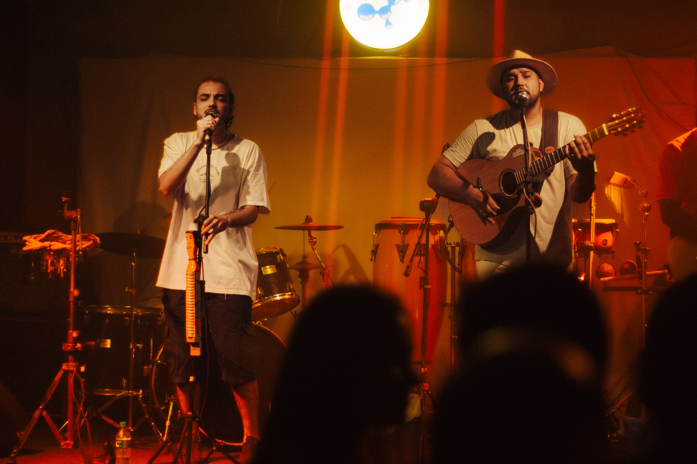
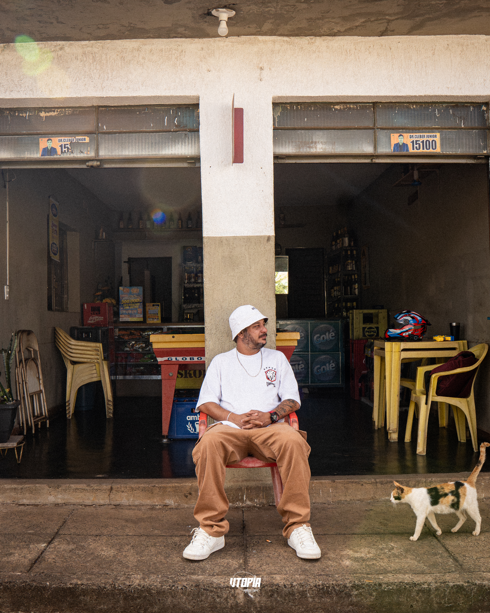
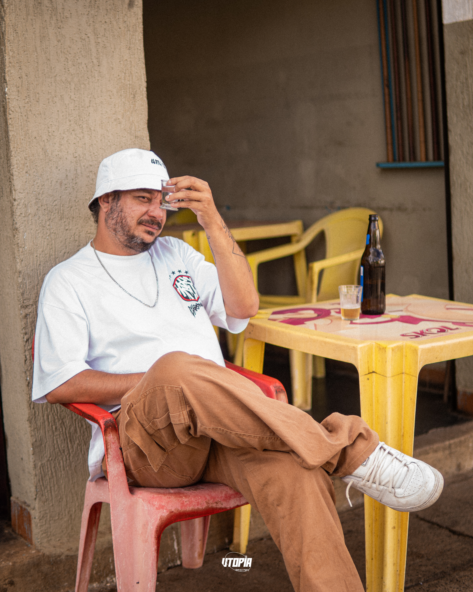

GAIOLA RECORDS

Criada em 2019, a Banda Suricatos nasceu do encontro de universitários ansiosos por mostrar a música de qualidade no cenário uberabense.
De lá pra cá, o amadurecimento e a evolução foram naturais, conforme nossa participação em eventos culturais da cidade.
Com os criadores, compositores e musicistas Enzo e João, nasceram músicas autorais repletas de influências culturais como Jazz, Bossa Nova, Forró e, principalmente, o Reggae.
A Banda Suricatos tem ocupado os palcos de Uberaba, sempre levando o amor, a alegria e o regionalismo para todos os públicos.
Formato Banda
5 PESSOAS (VOZES / VIOLÃO / GUITARRA / BAIXO / BATERIA)
2 HORAS
download Rider
Formato Duo
2 PESSOAS (VOZ & VIOLÃO / VOZ & PERCUSSÃO)
2 HORAS
download Rider

Suri-Experiência
Apresentação Ao Vivo


play_circlePALCOS E FESTIVAIS
Booking & Informações
Suricatos está disponível para apresentações em todo o território nacional.
Entre em contato com a Gaiola Records para discutir propostas e disponibilidade de agenda.